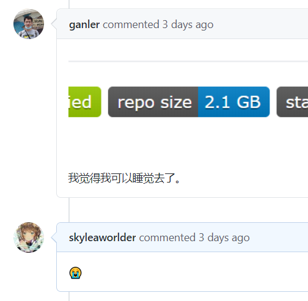
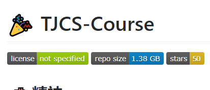
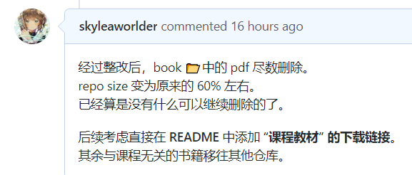

起因
考试周的时候，利用闲暇时间点出了一个叫 TJCS-Course 的资源仓库。
(厚颜无耻地继续打广告)
由于一开始没有任何规划，所以就想着把好东西一股脑地全放进去了。
完全没有考虑到版权！ 但同时更重要的是，完全没有考虑到仓库的大小！
一个资源共享型仓库肯定是希望别人贡献自己的宝贝，但如果连一个 git clone 都得等上两个小时（零加速情况下），该是多么令人困扰啊。

究其原因，是我在往 repo 里面上传了好多 pdf 文件。
那么我把这些东西删掉，就可以了吧。（
经过
1. 一个目录结构
要说删除 repo 里面的文件，首先想到的肯定是 git rm （大雾），但是这么做并不能将它彻彻底底的删除。
不妨建立这样一个仓库结构：
1 | (./filter) |
这里是创建上述结构的过程：
1 | mkdir filter && cd filter |
那么我在当前目录(filter)下，使用如下指令：
1 | git rm a_folder/a_1.txt |
那么结果肯定是 a_1.txt 被删除。但其实 a_folder 也被删除了。
一提起这个，不妨说下 rm 和 git rm 的区别：
2. rm 与 git rm 还有 git rm –cached
对于 rm 而言，删除之后，只是删除了工作目录中的内容，并没有产生实质的变化(指 index 中)：
1 | rm a_folder/a_1.txt |
得到的输出为：
On branch master
Changes not staged for commit:
(use "git add/rm <file>..." to update what will be committed)
(use "git restore <file>..." to discard changes in working directory)
deleted: a_folder/a_1.txt
no changes added to commit (use "git add" and/or "git commit -a")这说明东西还没有添加到暂存区(not staged in the index)，如果在仅仅执行 rm 指令之后，立刻执行普通的 commit 的话：
1 | git commit -m "???" |
得到的输出为：
On branch master
Changes not staged for commit:
deleted: a_folder/a_1.txt
no changes added to commit由此可见，没有任何修改被添加到了暂存区中，也就无法仅仅使用 git commit -m 产生任何提交。
在这里当然可以使用 git add 将文件添加到暂存区中。
在 bash 中敲命令的时候，就会发现一件小事：
打出 git add a_folder/ 之后，敲 tab 键可以自动产生 a_1.txt。这彷佛就在说：“a_1.txt 文件并没有真正地离开目录。”
而当我们提交 git add 命令后：
1 | git add a_folder/a_1.txt |
得到的输出是：
On branch master
Changes to be committed:
(use "git restore --staged <file>..." to unstage)
deleted: a_folder/a_1.txt在这里看的话，不能一下子感受到 “现在” 与刚刚的不同。但是在终端中，之前的未添加到暂存区的时候，是由红色标注的，而现在是绿色的。
在这里我还不想轻易删除这个 a_folder/a_1.txt 文件，所以赶快恢复暂存区：
1 | git restore --staged a_folder/a_1.txt |
现在原本被 rm，并且 git add 的文件就又回来了。
接下来可以试试 git rm，不过在完全删除它之前，可以看一下一个 cached 参数：
1 | git rm --cached a_folder/a_1.txt |
这样做的结果是：
On branch master
Changes to be committed:
(use "git restore --staged <file>..." to unstage)
deleted: a_folder/a_1.txt
Untracked files:
(use "git add <file>..." to include in what will be committed)
a_folder/呈现出来的有：
a_1.txt被删除，并且添加到了暂存区；a_folder变为未跟踪的状态。
对于这个或许有些奇怪。
在 git rm 的时候，由于 a_folder 文件夹只有一个文件，所以执行之后，a_1.txt 文件连同这个文件夹一并被删除。
可是现在来看，a_1.txt 是肯定被删除了的，并且如果提交的话，暂时不会在后续的 history 中出现了。
然而，a_folder 却没有被删除，而是显示未跟踪状态。那么不妨：
1 | ls a_folder |
就可以看到这样的输出：a_1.txt
也就是说 git rm --cached 仅仅从 index 中删除了这个文件（git status 后绿色的提示），但是 却没有在工作目录中删除 a_1.txt 文件。
不妨试着做下面的操作：
1 | git add a_folder/a_1.txt |
首先，因为 a_1.txt 还在工作目录(working directory)当中，所以摁 tab 是可以自动补全的。
其次，这个语句执行完毕之后，输出结果是很正常的 nothing to commit, working tree clean。
这是因为我又将 a_1.txt 添加了回来。和原本的、最初的相比没有 任何差别。
如果上面的 add 后跟的不是文件名，而直接是整个 a_folder 文件夹：
1 | git add a_folder |
结果也肯定还是相同的。因为这个文件夹正处于 未追踪 状态，add 后会将文件夹中所有文件全部添加到 git 中。毕竟 git 并不和文件夹打交道，而是与文件们。
于是可以总结一下：
| 种类 | rm | git rm | git rm –cached |
|---|---|---|---|
| 使用后结果 | 删除 working tree 中内容，不修改 index，后续如果需要 commit，需要 add 或者 commit -a | 同时删除 working tree 与 index 中内容，可以直接 commit | 只修改 index，不删除 working tree 中内容，保留了肉眼可见的文件 |
| 可能发生的事 | 文件夹仍在，普普通通的 bash 删除 | 如果文件夹仅仅只有一个文件，那么删除该文件后，文件夹一并消失 | 对肉眼可见到的文件/ 文件夹毫无影响 |
3. 虚假的删除：git rm
好的，现在的目录结构仍旧是最初的样子：
1 | (./filter) |
接下来，我想要删除 b_1.txt，那么就需要：
1 | git rm b_folder/b_1.txt |
对应的输出是这样的：
rm 'b_folder/b_1.txt'
(git rm 之后)
[master 3823c6d] D: del b_1.txt
1 file changed, 1 deletion(-)
delete mode 100644 b_folder/b_1.txt
(git commit 之后)
commit 3823c6d6f7b24edb2555f4cf53db3ad81718ffd2 (HEAD -> master)
Author: skyleaworlder
Date: Sat Jul 11 11:40:37 2020 +0800
D: del b_1.txt
commit ddc2e53199c0957270ddecaf5ae68866c4c9f27f
Author: skyleaworlder
Date: Sat Jul 11 01:17:04 2020 +0800
A: add files and folders for init test-env
(git log 之后)接下来查看目录结构：
1 | ls |
悲伤的发现 b_folder 已经倒下了：
1.txt a_folder/现在的目录结构是这样：
1 | (./filter) |
但是没有关系，a_folder 看似倒下了，但是做到死者苏生并不是一件困难的事情：
只需要回退到 a_folder 还在的时候就行了：
1 | git reset ddc2e5 --hard |
(使用 –hard 是因为这样就不用再打一遍 git restore --worktree 了，反正现在要的就是它重新出现的效果，懒……)
对应的输出是：
HEAD is now at ddc2e53 A: add files and folders for init test-env这说明我们已经成功回到了最初的状态，尝试着 git status 一下，也会发现现在 “nothing to commit”。
再次 ls，会看到 a_folder 重新回归怀抱。
里面的 a_1.txt 也重新出现。
这就说明 git 的删除并不是彻底的删除，而是给予了回旋的余地。防止误删了很重要的东西，毕竟在我看来：
只要是产生出来的文件，就有产生出来的理由。所以删除文件是可以的，但是 彻底、完全地删除一个文件 在 git 中却并不简单。
那么怎样才能彻底删除呢？？
4. 真正的删除：filter-branch
我们重回到新的提交处：
1 | git reset 3823c6 |
并使得当前 “nothing to commit”。
当前目录结构为：
1 | (./filter) |
如果想要彻底的删除，就要先弄清彻底删除意味着什么：
- 意味着通过 reset 回退，无法再现文件；
- 意味着仓库中某些 必要 文件的缺失 / 删除；
- 意味着整个仓库的体积必定会下降（指完成删除前的最后一步和删除之后相比，并非比较删除流程前和删除流程后）。
这就需要进入到 .git 文件夹内部进行删改。
目前这个仓库还比较的小，因为只是添加了一些普通的 txt 文件而已：
1 | git count-objects -v |
count: 9
size: 0
in-pack: 0
packs: 0
size-pack: 0
prune-packable: 0
garbage: 0
size-garbage: 0现在我们使用这个语句来永远删除 a_1.txt。
删除之前，可以引入一下 filter-branch 这个命令：
它的做法很简单，就是通过某种算法，自根向枝扫描所有的提交，只要对所有的提交都 施加某种操作。
只不过在这里，这个操作是 git rm 而已。
需要注意的是：这个语句的执行效率特别的低！
由于 filter-branch 会把所有能够搜索到的提交全部扫描一遍，因此这个操作注定比较低效。
那么从哪里开始这个操作就显得尤为重要。
特别是 TJCS-Course 这个 repo，由于尽量细化了每一次 commit，所以明明现在还没有多少文件，就已经有了 50+ 次 commit。
同时由于之前 pdf 等文件过多，count-objects 下显示的 count 甚至达到了 4 位数。
commit 一多，整个 filter-branch 的时间就会线性增长，拿 56 次 commit 的 repo 为例，一次操作可能需要 100s 的时间。
于是，这需要对每一个需要彻底删除的文件追根溯源：
1 | git log --oneline --branches a_folder/a_1.txt |
最后显示的 Hash ID，就是这个文件 第一次被跟踪时的 commit。
在这里，由于我的 commit 只有两次，所以输出就是：
ddc2e53 A: add files and folders for init test-env由此也可以看出，写好、写规范 commit 中的 --message 是多么的重要。
在此之后，就可以根据这个 Hash ID 写出修改语句。
但是由于这里只有两个 commit，所以我就不写 Hash ID了：
1 | git filter-branch --index-filter --force 'git rm --ignore-unmatch a_folder/a_1.txt' |
这个语句的输出是：
Rewrite ddc2e53199c0957270ddecaf5ae68866c4c9f27f (1/2) (1 seconds passed, remaining 1 predicted) rm 'a_folder/a_1.txt'
Rewrite 3823c6d6f7b24edb2555f4cf53db3ad81718ffd2 (1/2) (1 seconds passed, remaining 1 predicted) rm 'a_folder/a_1.txt'
Ref 'refs/heads/master' was rewritten可以看出无论是之前的 ddc2e5 还是现在停留的 3823c6，都曾还留存着 a_1.txt，但是这个语句之后，一切都将不复存在。
现在的目录结构为：
1 | (./filter) |
并且还可以看到，这里说的是 Rewrite xxxx，再次使用 git log 之后，可以看到 commit 的 Hash ID 也改动了！
commit 3ab9d139bb3e14ae387f41ba2a9977e25b95e6b7 (HEAD -> master)
Author: skyleaworlder
Date: Sat Jul 11 11:40:37 2020 +0800
D: del b_1.txt
commit c4fd869339f9c00abf99d8ee4176d9e720831fe9
Author: skyleaworlder
Date: Sat Jul 11 01:17:04 2020 +0800
A: add files and folders for init test-env现在看到的两个 commit，已经不是过去的那两个了：
1 | git reset c4fd86 --hard |
现在只能够看到 1.txt 和 b_folder 了，目录结构为：
1 | (./filter) |
原本的 a_folder/a_1.txt 以及文件夹一同被删去。即使是版本回退也无法看到。
但不得不说，filter-branch 也是一种操作，这个操作过后：
1 | git count-objects -v |
count: 13
size: 1
in-pack: 0
packs: 0
size-pack: 0
prune-packable: 0
garbage: 0
size-garbage: 0输出中可以看到 .git 文件夹下的 obj 文件夹个数又增加了。
并且总的 .git 文件夹大小还没有变化。
明明彻底删除了文件，但是却没有变化，这是奇怪的事情。
实际上这是因为整个 repo 目前只是和 之前有关 a_folder/a_1.txt 的 obj 等文件割断了联系，但是却没有删除这些文件。
目前的文件夹情况：
还需要进一步的操作：
Git-Internals-Maintenance-and-Data-Recovery
Your history no longer contains a reference to that file.
However, your reflog and a new set of refs
--- that Git added when you did the filter-branch under .git/refs/original still do，
so you have to remove them and then repack the database.
You need to get rid of anything
--- that has a pointer to those old commits before you repack.1 | rm -Rf .git/refs/original |
这是为了和过去切断一切联系，删除了过去的 original 和 logs，再之后，使用了 gc 命令来打包。
现在相当于重新生成了一套与现在匹配的数据(repack the database)，gc 命令的输出为：
Enumerating objects: 5, done.
Counting objects: 100% (5/5), done.
Delta compression using up to 12 threads
Compressing objects: 100% (2/2), done.
Writing objects: 100% (5/5), done.
Total 5 (delta 0), reused 0 (delta 0)之后我们可以看一下现在这个情况下的 obj 情况：
1 | git count-objects -v |
count: 8
size: 0
in-pack: 5
packs: 1
size-pack: 1
prune-packable: 0
garbage: 0
size-garbage: 0并且在 .git/objects/pack 文件夹中生成了一个 .pack 文件和 .idx 文件。（这个我还不清楚是个什么东西……）
我们可以从外部看一下 .git 文件夹的大小：
耶！低于原本的 23.4KB！
上面的输出提到了一个： 8。
这个 8 就是总的 .git/objects 内部所有 Hash ID 编号文件夹内部的文件夹数量。
但是对于目前的状态来说，他们都是一些松散的大对象啦。可以毫不留情地删除：
1 | git prune --expire now |
count: 0
size: 0
in-pack: 5
packs: 1
size-pack: 1
prune-packable: 0
garbage: 0
size-garbage: 0.git 文件夹的大小可以进一步缩小：
现在这些对象就消失了。
如果这个仓库同时也部署在了远端的话，可以通过：
1 | git push origin master -f |
强制推到远端，就可以使远端的仓库体积缩小了！
结果


对比一下，删除了所有电子书 pdf，直接从 2.1GB 降到了 1.38GB，缩减将近 35%。
虽然仓库本身还是很大，还是需要 clone 一个小时多(假设 clone 速度为 400KB/s (什么？这不是已经很快了吗？))
最后，感谢 L·TJU信安之光·卷王·唯一真神·Eol·PhD 的倾情付出，我都菜成这个样子了还和我聊天。